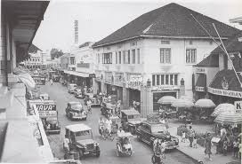
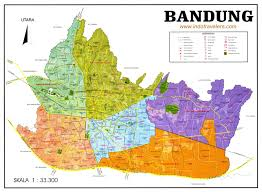
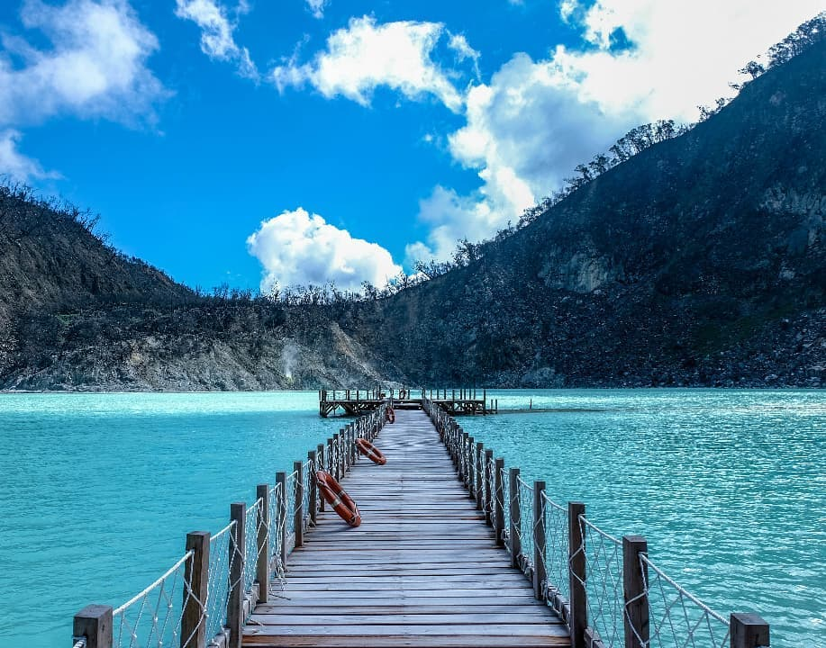
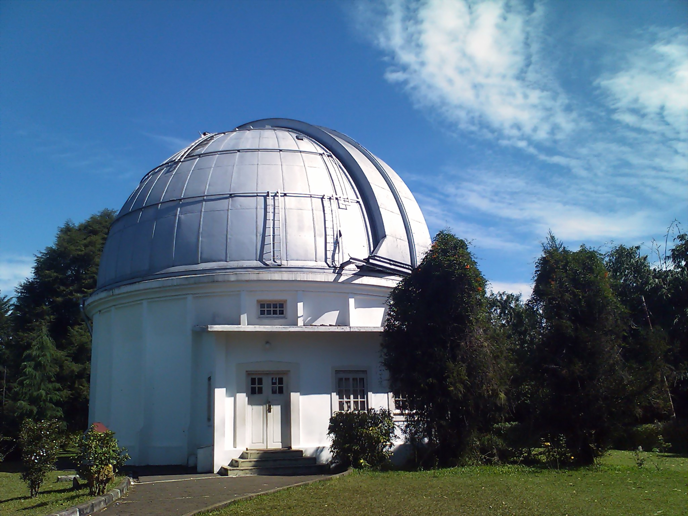

Sejarah

Bandung, kota yang kaya akan sejarah, telah mengalami berbagai transformasi dari masa ke masa. Awalnya, Bandung adalah sebuah desa kecil yang berkembang menjadi pusat pemerintahan Kabupaten Bandung, kemudian menjadi ibukota Keresidenan Priangan, dan kini menjadi kota metropolitan yang dikenal dengan julukan "Kota Kembang" atau "Parijs van Java".
Geografis

Bandung, ibu kota Jawa Barat, secara geografis terletak di dataran tinggi yang dikelilingi oleh pegunungan. Kota ini dikenal dengan sebutan "Kota Kembang" dan memiliki julukan "Paris van Java" karena keindahan alamnya dan suasana yang sejuk. Secara topografis, Bandung berada pada ketinggian sekitar 768 meter di atas permukaan laut, dengan titik tertinggi di bagian utara dan terendah di bagian selatan.
Wisata

Kawah Putih adalah danau kawah vulkanik yang terletak di Ciwidey, Bandung Selatan. Kawah ini terkenal dengan keindahan alamnya yang unik, terutama warna airnya yang bisa berubah-ubah dan pasir serta bebatuan di sekitarnya yang berwarna putih. .
Boscha

Observatorium Bosscha adalah observatorium astronomi tertua di Indonesia, terletak di Lembang, Bandung. Didirikan pada tahun 1923 oleh Nederlandsch-Indische Sterrenkundige Vereeniging (NISV) dengan dukungan dari Karel Albert Rudolf Bosscha, seorang pengusaha perkebunan teh. Observatorium ini terkenal dengan teleskop besar refraktor gandanya dan telah menjadi pusat penelitian astronomi serta pendidikan bagi masyarakat.
Gedung Sate

Gedung Sate adalah sebuah bangunan bersejarah yang menjadi ikon kota Bandung dan Jawa Barat. Awalnya, gedung ini dibangun pada tahun 1920-1924 sebagai kantor pusat pemerintahan Hindia Belanda dengan nama Gouvernements Bedrijven. Namun, masyarakat lebih mengenalnya sebagai Gedung Sate karena ornamen di puncaknya yang menyerupai sate dengan enam tusuk, melambangkan biaya pembangunan yang mencapai 6 juta Gulden.